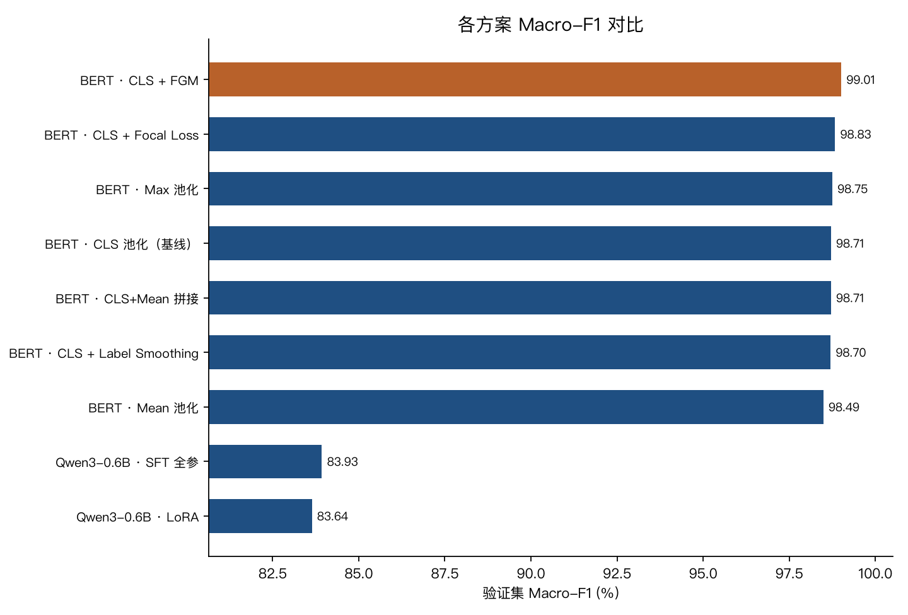

数据：商品名 → 10 品类（train 14,397 / val 1,600 / test 4,003） 硬件：RTX 4090（24 GB） 指标：验证集 Macro-F1（各类等权）

| 方案 | Macro-F1 | Accuracy | 训练耗时(s) | 备注 |
|---|---|---|---|---|
| BERT · CLS + FGM | 0.9901 | 0.9931 | 113 | 最佳 |
| BERT · CLS + Focal Loss | 0.9883 | 0.9919 | 70 | |
| BERT · Max 池化 | 0.9875 | 0.9919 | 68 | |
| BERT · CLS 池化（基线） | 0.9871 | 0.9912 | 72 | |
| BERT · CLS+Mean 拼接 | 0.9871 | 0.9919 | 69 | |
| BERT · CLS + Label Smoothing | 0.9870 | 0.9912 | 71 | 无效果 |
| BERT · Mean 池化 | 0.9849 | 0.9906 | 71 | 最差 |
| Qwen3-0.6B · SFT 全参 | 0.8393 | 0.8781 | 707 | |
| Qwen3-0.6B · LoRA | 0.8364 | 0.8762 | 340 | 0.76% 参数 |
差距：BERT 最佳（0.9901）比 LLM 最佳（0.8393）高 15.1 个点。 换算成错误数：BERT 约 16/1600 条判错，LLM 约 258/1600 条。
单次运行的 0.1~0.3 个点差异可能只是噪声（1600 条验证集上，0.1 点 = 1.6 条样本）。 所以对三个关键配置各跑了 3 个种子：
| 配置 | seed 42 | seed 7 | seed 2024 | 均值 | 标准差 |
|---|---|---|---|---|---|
| CLS 基线 | 0.9871 | 0.9875 | 0.9844 | 0.9863 | 0.0017 |
| Max 池化 | 0.9875 | 0.9848 | 0.9845 | 0.9856 | 0.0017 |
| CLS + FGM | 0.9901 | 0.9895 | 0.9896 | 0.9897 | 0.0003 |
结论：
| 对比 | 差值 | 判断 |
|---|---|---|
| FGM − CLS | +0.0034 | ✅ 真实提升（3 个种子全部优于基线，最差 FGM 0.9895 > 最好基线 0.9875） |
| Max − CLS | −0.0007 | ❌ 无差异（远小于标准差 0.0017） |
FGM 不仅均值更高，标准差还小了 5 倍（0.0003 vs 0.0017）——说明它让训练更稳定。
| 池化 | Macro-F1 | 相对基线 |
|---|---|---|
| CLS | 0.9871 | — |
| Max | 0.9875 | +0.0004 |
| CLS+Mean | 0.9871 | 0 |
| Mean | 0.9849 | −0.0022 |
四种池化的差距最大只有 0.22 个点，在噪声范围内（种子标准差 0.17）。
原因：这个任务已经接近饱和（98.7%）。当模型几乎全对时， 「怎么把 BERT 的隐状态压成一个向量」的差别就被淹没了。
池化的价值通常体现在难任务上（长文本、细粒度情感、检索）。 在简单分类任务上换池化，收益基本为零。
它为什么有效：FGM 在 embedding
上加扰动，迫使模型不依赖单个词的精确表示。
商品名里的品牌词、规格词（500ml、180g）是典型的「容易过拟合的局部特征」，
FGM 正好削弱这类捷径。
单次运行 0.9883，在种子噪声范围内（±0.17），不能算显著。
任务本身不均衡程度只有 4.9:1，且各类都学到了（最低类 F1 也有 0.95+）， Focal 想解决的「难样本学不会」问题在这里不存在。
0.9870 vs 基线 0.9871，完全一样。
原因同上：任务已饱和，模型本来就没有过度自信的空间； LS 的作用是抑制过拟合，而这里没有明显过拟合（3 个 epoch 内 val 一直在涨）。
| 可训练参数 | Macro-F1 | 耗时 | |
|---|---|---|---|
| 全参 SFT | 596 M (100%) | 0.8393 | 707 s |
| LoRA (r=16) | 4.6 M (0.76%) | 0.8364 | 340 s |
用 0.76% 的参数、一半的时间，只损失 0.29 个点。
这是 LoRA 的典型表现：在数据量不大（1.4 万条）、任务简单的场景下， 低秩更新足以覆盖需要学习的增量。
| 原因 | 说明 |
|---|---|
| 预训练目标不匹配 | BERT 用 MLM，天然学到词的语义表示；Qwen3 是自回归，擅长续写而非判别 |
| 输出空间被压缩 | LLM 用「答案首 token 的 logits」做 10 分类，等于只用了模型能力的一小部分 |
| 模型规模 | 0.6B 的判别能力远不如 110M 的 BERT 在它擅长的任务上 |
| 数据量 | 1.4 万条足够微调 BERT，但不足以重塑 0.6B LLM 的生成行为 |
| 任务性质 | 短文本、关键词特征强——这正是 BERT 的舒适区 |
换个任务（需要世界知识、需要推理），LLM 的优势就会显现。 这个数据集恰好是「关键词匹配」，BERT 的最优场景。
数据与代码：bert/、llm/、report.py